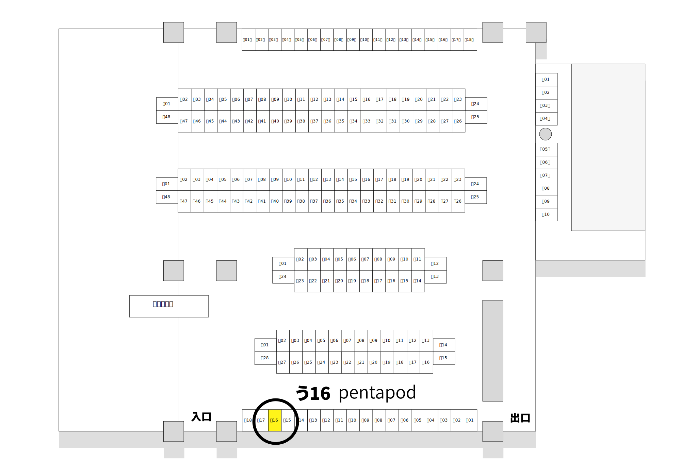
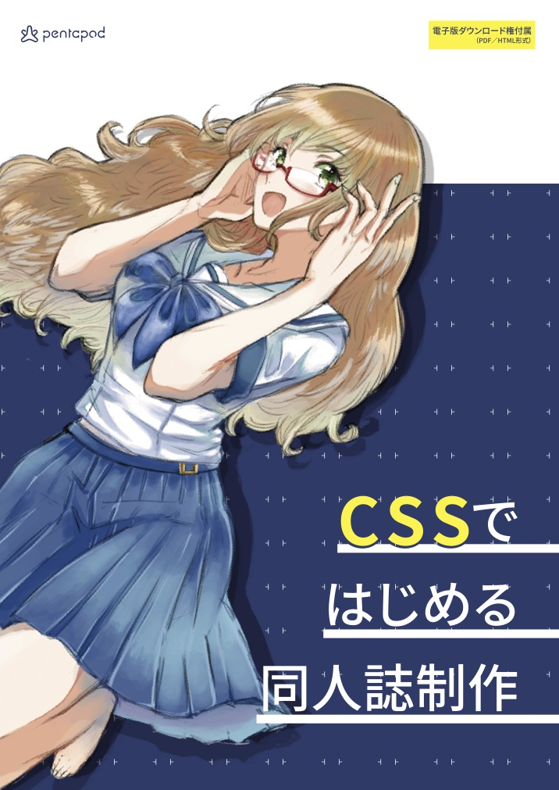

技術書典3 新刊
やっていく
合同誌
Illust:
小枝あずき
旬の技術、 揃ってます。
「やっていく」こととは、新しいことに挑戦する心意気。
4人の開発者が「最近知った新しい技術」をテーマに、
やっていきました。
掲載コンテンツ
やっていく
deeplearn.js
written by
spring_raining
やっていく
Nuxt.js
written by
potato4d
やっていく
chromy
written by
abcang
やっていく
Cassandra
written by
kamijin_fanta

タイトル
やっていく合同誌
ISDN
278-4-523827-02-0
頒布場所
技術書典 3
2017年10月22日(日) 11:00〜17:00 at
アキバ・スクエア
う-16
カタログを見る
頒布価格
B5冊子版
¥500
電子版
¥300
BOOTHにて発売予定
冊子版購入者は電子版が
¥0!!!
仕様
B5 モノクロ 40ページ

C92新刊「
CSSではじめる同人誌制作
」も頒布予定！
数は少なめなのでお早めに…
このページを共有
技術書典カタログ
でお気に入りに追加
Twitter
でツイート
Facebook
でシェア
はてなブックマーク
に登録